Serverless
Serverless đang ngày càng trở nên phổ biến, thậm chí đang trở thành giải pháp được nghĩ đến đầu tiên khi
thiết kế
kiến trúc của bất cứ hệ thống Backend nào. Với những ưu điểm như : Dễ dàng vận hành, mở
rộng, availability, tiết kiệm chí phí...(những công việc này đều được thực hiện tự động bởi các nền tảng
cung cấp dịch vụ Serverless).
Những nền tảng cung cấp dịch vụ serverless phổ biến như: AWS, Azure, NextJS - Vercel, .... Công việc của
người
dùng chỉ đơn giản là phát triển ứng dụng và trả tiền.
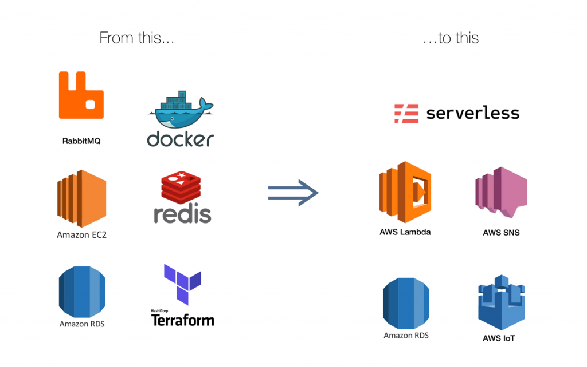
AWS Lambda là một dịch vụ của AWS để cung cấp giải pháp serverless đến người dùng. AWS Lambda có thể tự động
mở rộng (scaling) để xử lí từ một request đến hàng trăm, hàng ngàn request trên một giây. Và bài viết này sẽ
giúp chúng ta hiểu hơn về cách AWS Lambda xử lí bài toán này.
Concurrency và requests per second
Cách xử lí các tác vụ đồng thời (concurrency) và xử lí các requests trên giây (requests per second) là hai
hướng chính để giải quyết bài toán auto scaling.
Concurrency của hệ thống là khả năng xử lí nhiều tác vụ đồng thời, tức là trong 1 thời điểm, hệ thống có thể
xử lí bao nhiêu tác vụ song song.
Việc xử lí số lượng request hay transaction trong 1 giây, khác với Concurrency. Bởi vì 1 request có thể được
xử lí trong ít hoặc nhiều hơn 1 giây, dẫn được việc trong 1 giây, hệ thống có thể xử lí 2 request hoặc chỉ
có thể xử lí 1 request duy nhất.
Runtime environment.
Lambda sẽ khởi tạo 1 runtime enviroment để thực thi function. Và mỗi 1 runtime environment chỉ có thể xử lí
1
request tại một thời điểm.
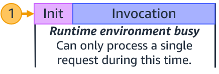
Vòng đời của các request đến function.
Ở request đầu tiên đến function, Lambda sẽ tạo mới một runtime enviroment. Code ở ngoài function main
handler sẽ được thực thi trước. Giai đoạn này gọi là giai đoạn khởi tạo (Init), sau đó Lambda mới bắt đầu
thực hiện function main handler (Invocation).
Sau khi Lambda xử lí xong request
đó, thì runtime environment mới sẵn sàng để xử lí request tiếp theo
đến cùng một function. Và ở
request tiếp theo Lambda sẽ bỏ qua giai đoạn Init và chỉ thực hiện giai đoạn invocation.
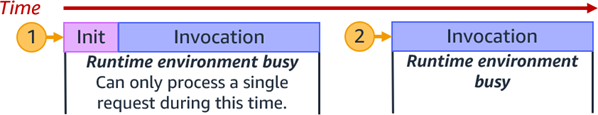
Nếu request đến cùng lúc mà request đầu tiên vẫn đang trong quá trình xử lí thì Lambda sẽ tạo một runtime
enviroment khác. Trong ví dụ dưới đây, Lambda đã tạo các runtime enviroment cho các request 2, 3, 4, 5. Và
mỗi khi tạo một enviroment mới Lambda sẽ chạy lại cả 2 giai đoạn init và invocation.
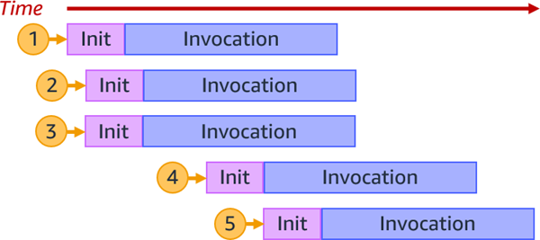
Với các requests tiếp, Lambda sẽ sử dụng lại các enviroment đã khởi tạo, và khi sử dụng lại thì giai đoạn
init cũng sẽ được bỏ qua như đã nhắc đến ở trên.
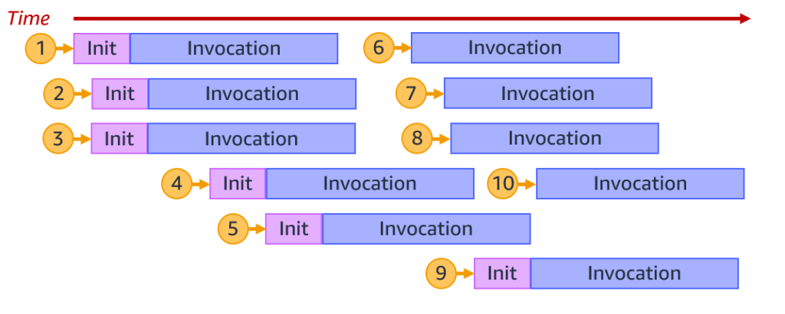
Số lượng enviroment được tạo ra cũng tương ứng với khả năng xử lí nhiều tác vụ tại cùng một thời điểm
(Concurrency).
1 runtime enviroment = 1 concurrent request.
10 runtime enviroment = 10 concurrent requests.
Khi số lượng request đến 1 function giảm xuống, thì Lambda sẽ dừng các runtime enviroment không sử dụng để
tăng khả năng mở rộng cho các function khác.
Invocation, concurrency, transactions/requests per second
Số lượng request Lambda có thể xử lí trong 1 giây thì sẽ bằng tổng Invocation được thực thi trong thời gian
đó.
Ví dụ nếu 1 function mất 1 giây để xử lí , và Lambda đã tạo 10 runtime enviroment để xử lí 10 request đồng
thời thì số request Lambda có thể xử lí trong 1 giây sẽ bằng tổng số invocation = 10.
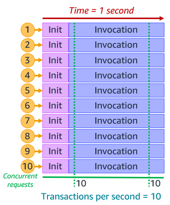
Nhưng nếu function đó chỉ mất khoảng 500ms để thực thi và vẫn với 10 runtime enviroment thì tổng số request
lambda có thể thực hiện trên giây = 20.
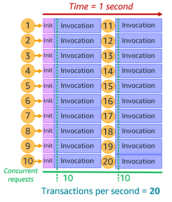
Bạn có thể theo dõi số lượng concurency request = Amazon CloudWatch. Với số liệu là ConcurrentExecutions.
Như vậy ta có thể có công thức để tính được số lượng request mà lambda có thể xử lí đồng thời (concurency):
RequestsPerSecond x AvgDurationInSeconds = concurrent requests
Lưu ý: Số liệu AvgDurationInSeconds là thời gian trung bình của tất cả các function được gọi đến
trong
khoảng thời gian 1 giây.
Scaling quotas
Service Quotas là service AWS cung cấp để quản lí (quota) về resource, actions.. của các AWS
service, mỗi config đều có giá trị default, và bạn có thể request để thay đổi các giá trị đó
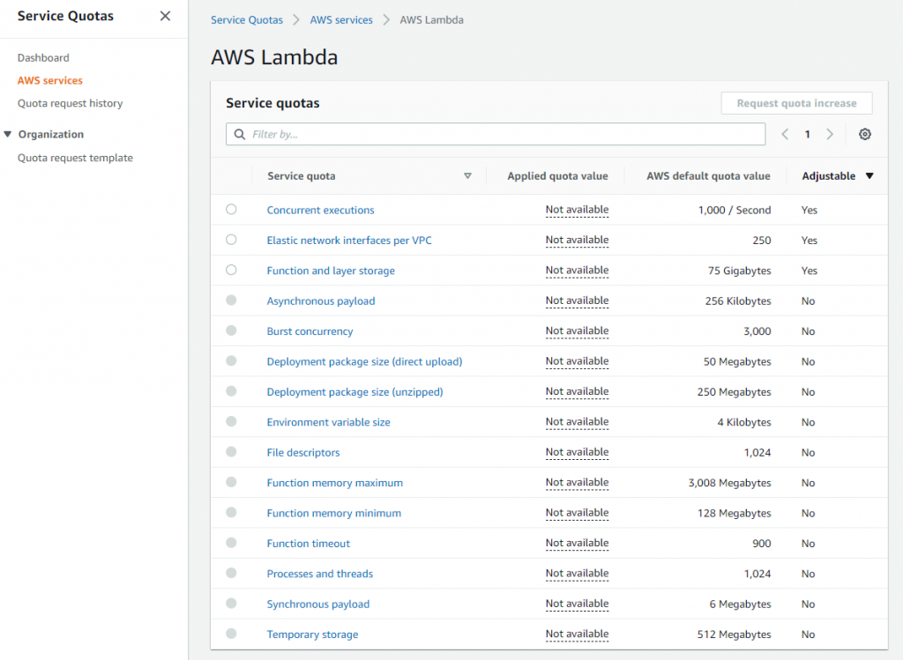
Có hai giá trị trong Service Quotas liên quan đến concurrency đó là Account concurrencty và Burst
concurency.
1, Account concurency: số lượng tối đa các tác vụ mà lambda có thể xử lí đồng thời trong 1 Region. Lưu ý số
lượng này được tính theo tổng của tất cả các lambda function đang process của 1 account, chứ không tính theo
riêng từng function.
2, Burst concurency: cung cấp số lượng tối đa function có thể init đồng thời. Có thể là từ 500 - 3000 tùy
vào từng region. Sau giai đoạn init đồng thời này, những request tiếp theo Lambda không cần init runtime
enviroment nữa mà chỉ cần xử lí các function ở giai đoạn Invocation và tối đa là 500 request đồng thời (500
concurency). Và từ request thứ 501 , lambda sẽ trả về throttling error (429).
Ví dụ
Trong ví dụ dưới đây số lượng Account concurency đã được request tăng lên 7000. Và account chỉ có duy nhất
một
function (vì vậy trong trường hợp này function này có thể sử dụng hết được số lượng account concurency đang
available)
Giả sử thời gian trung bình để xử lí xong function (AvgDurationInSeconds) là 250ms.
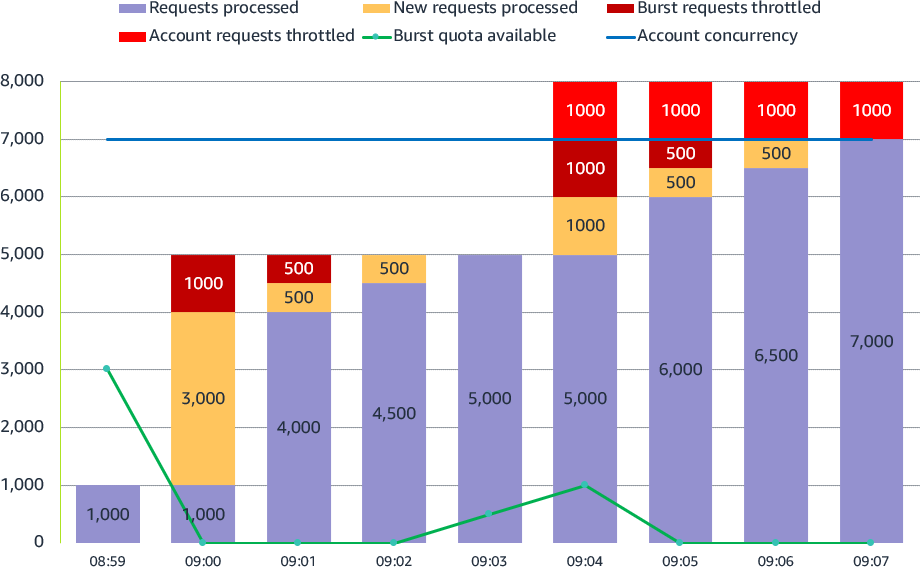
1.
08:59: Lambda đã khởi tạo và xử lí xong 1000 request đồng thời. Tại thời điểm
này số lượng request lambda
có thể xử lí trong 1s là : 1000 (Concurrent requests) / 0.250 (AvgDurationInSeconds) = 4000.
2.
09:00: Thời thời điểm này Lambda nhận được 5000 request đồng thời. 1000 request sẽ sử
dụng lại runtime
enviroment đã khởi tạo tại thời điểm (08:59). 3000 request sẽ khởi tạo runtime enviroment mới (3000 là số
lượng Burst concurency đã config trong Service quotas). 1000 request cuối cùng sẽ bị return error throttled
(429)
3.
09:01: Khi chưa đạt số lượng request đồng thời tối đa là 7000 thì Lambda sẽ có cơ chế tự
động retry lại
các request đã throttled (1000). Do ở 09:00 đã khởi tạo tối đa số lượng Burst concurency nên lúc này Lambda
chỉ có thể burst tiếp 500 request.
4.
09:02: Lambda xử lí nốt 500 throttled request còn lại. Như vậy tại thời điểm này 5000
request đã được xử hoàn toàn.
5.
09:03: Lambda tiếp tục nhận 5000 requests. Do đã có 5000 runtime enviroment khởi tạo nên
, 5000 requests
này chỉ việc sử dụng lại. Lưu ý lúc này do Lambda không cần dùng đến số lượng Burst concurency nên Lambda sẽ
cộng thêm 500 Burst concurency vào 500 Burst concurency sẵn có. Tức là lúc này số lượng Burst concurency sẽ
là 1000 (chỗ này hay vcl, nên đ biết có hiểu đúng không?)
6.
09:04: Lambda tiếp tục nhận thêm 8000 requests. 5000 requets sẽ sử dụng lại 5000 runtime
enviroment đã
khởi tạo. 1000 requests sẽ được khởi tạo bởi cơ chế Burst concurency. còn lại 2000 request sẽ return
throttled error.
7.
09:05: Tương tự như thời điểm 09:01, 500 requests được burst runtime enviroment
mới.
8.
09:06: Tương tự như thời điểm 09:05, 500 requests được burst runtime enviroment mới. Lúc
này số request đồng thời đã đạt đến 7000. và vẫn còn 1000 requests vẫn trả về throttled error. Do đã đạt đến tối đa số lượng request đồng thời có thể xử lí nên 1000
request còn lại sẽ không được retry và luôn trả về throttled error cho client.
9.
09:07: Lambda nhận thêm 7000 requests. 1000 vẫn bị throttled. Lúc này Lambda có thể xử
lí 28000 request
trong 1 giây .
Reserved concurrency
Reserved concurrency là số lượng tối đa request có thể xử lí đồng thời cho 1 function. Điều này có thể giúp các function có
request đến database hay 1 hệ thống 3rd API có giới hạn số lượng request đồng thời crash. Nếu bạn setting = 0
thì Lambda không tiếp tục xử lí các request đến function này. Việc này giống như việc bạn shutdown server
vậy.
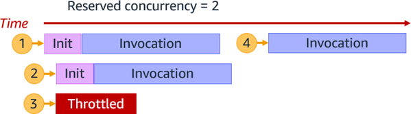
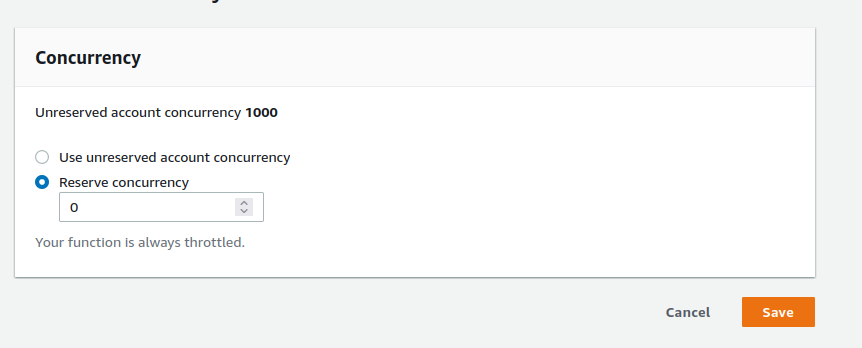
Provisioned Concurrency
Giai đoạn init function trước khi Lambda xử lí code trong hàm main handler
(invocation) nên luôn sẽ có độ trễ ( cơ chế cold-start giúp tiết kiệm chi phí nếu application không được sử
dụng) nên để giảm độ trễ này Lambda cung cấp cơ chế Provisioned Concurrency, cơ chế này sẽ khởi tạo sẵn một
số lượng theo setting runtime enviroment và khi có request đến thì request sẽ bỏ qua giai đoạn init và đến
thẳng giai đoạn invocation. Tất nhiên việc này sẽ phát sinh thêm chi phí.
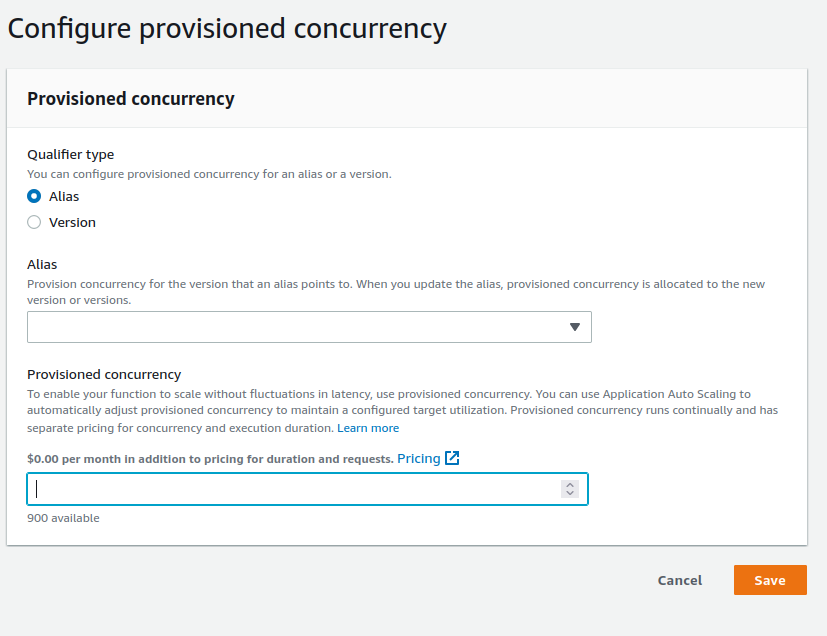
Bạn có thể monitor các số liệu sau trên Cloudwatch để có được số liệu setting phù hợp cho concurrency
1,
ConcurrentExecutions theo dõi tổng số runtime enviroment đã được init để xử lí events.
2,
UnreservedConcurrentExecutions cho biết số lượng function đã được xử lí mà chưa được setting
reserved
concurrency.
3,
ProvisionedConcurrencyUtilization cho biết Lambda đã sử dụng bao nhiêu phần trăm runtime
enviroment được
khởi tạo bởi Provisioned Concurrency để xử lí function.
4,
ProvisionedConcurrencySpilloverInvocations cho biết function đang xử lí trong enviroment được khởi
tạo
bình thường. (không dùng Provisioned Concurrency)
Cuối cùng
Hi vọng, bài viết này sẽ giúp anh em có một mùa chuyển nhượng thành công. ^^!
Bài viết tham khảo:
Link